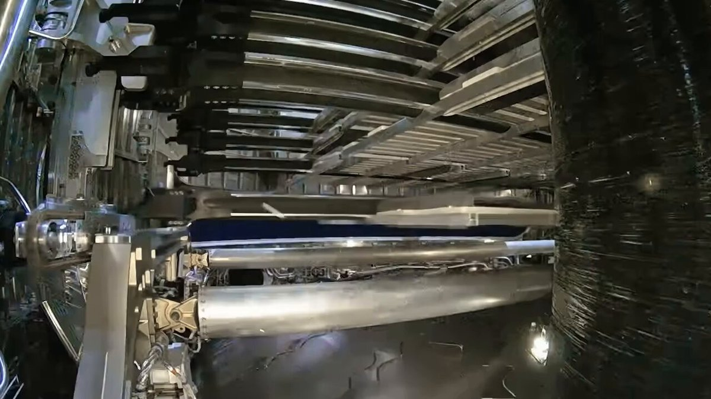
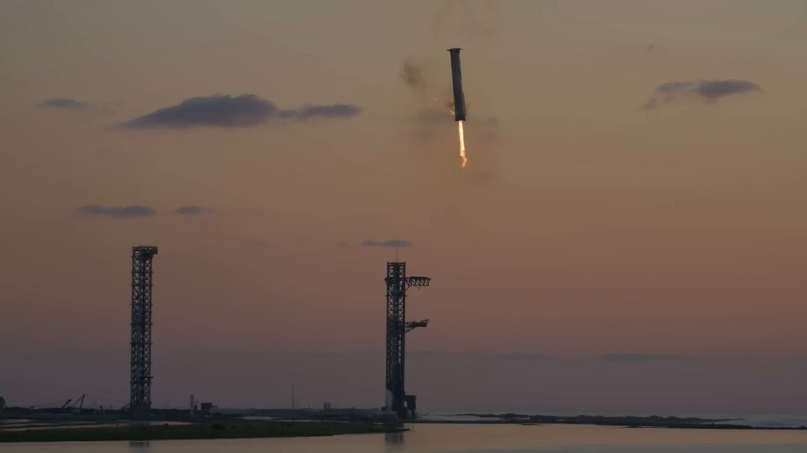
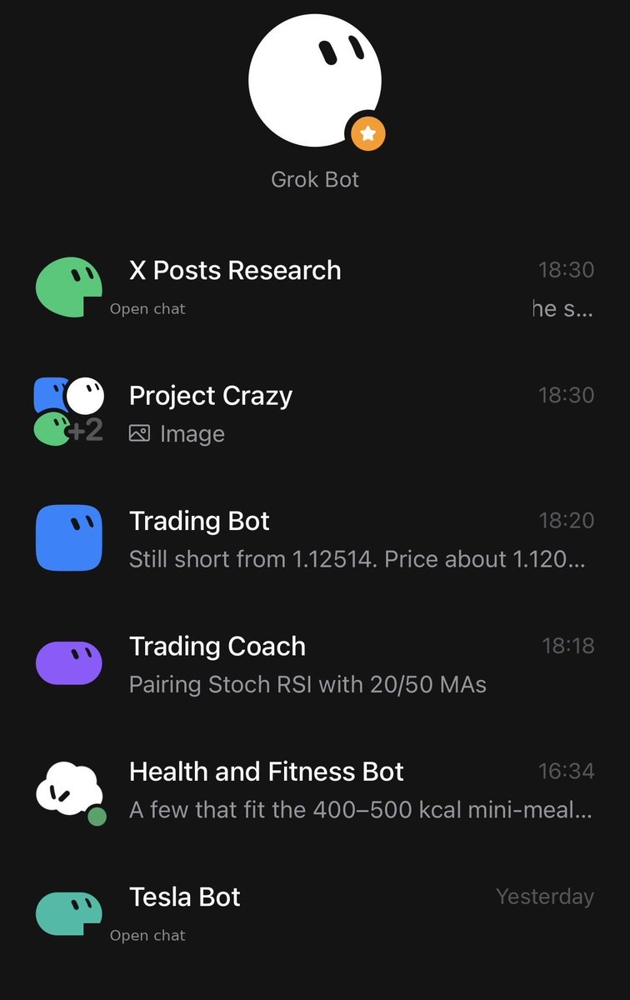

Fan account · Ireland
Alex · Tesla, SpaceX & Grok
Tesla owner and shareholder. I post the news, the numbers, and the launch footage that get crushed into 280 characters on X. This is the expansion: the same desk, with room to finish the sentence.
The account, in numbers
Same stats as the X profile. The site exists because a clip and a number often need more than one post.
Three desks
The bio on X is a comma-separated list. Here each one gets a room.
01 · Owner notes
Tesla
Beast, FSD on Irish roads, winter climate ideas, and the owner-shareholder view of Europe.
02 · Launch footage
SpaceX
Ship 40 coming home, Dragon Freedom, Starlink to phones, and a near-miss at 60 meters.
03 · The crew
Grok
A small bot crew that warms the car, watches the news, nags the gym, and trades against me.
Featured dispatch
The post that already travelled. Written out so the numbers can breathe.

9,000 meters became 60. Stargaze saw it.
Five hours before a pass, a Starlink sat was set to miss another company’s satellite by about 9 km. Then the other sat fired its engine without telling anyone.
From this week’s feed
Pulled from @AlJR86 and finished here.

Ship 40 is back in Texas
First upper stage to fly and come back in one piece. 75 days after the Indian Ocean.

FSD through Swiss snow
Four minutes of mountain passes. The clip Europe’s regulators keep asking for.

A crew, not a chatbot
Tesla Bot, news, gym, trading league — and Grok Bot tying the house together.
Why this site
X is the live wire. This is the desk.
The account is a fan account: Tesla, SpaceX and Grok, posted as news, numbers and launch footage. I am not affiliated with any of them. I own a Tesla, I hold the stock, and I live with the product in Ireland — including the potholes FSD has not met yet.
House rules
How a post earns a page
-
Lead with the number.If the story is 15,000 satellites or a 60-meter miss, the number goes first.
-
Show the footage.The clip is the point. The write-up is there so you do not have to pause the video to read.
-
Say when it is personal.Beast, Dublin, Irish roads, Grok Bot warming the cabin — those are owner notes, not press.